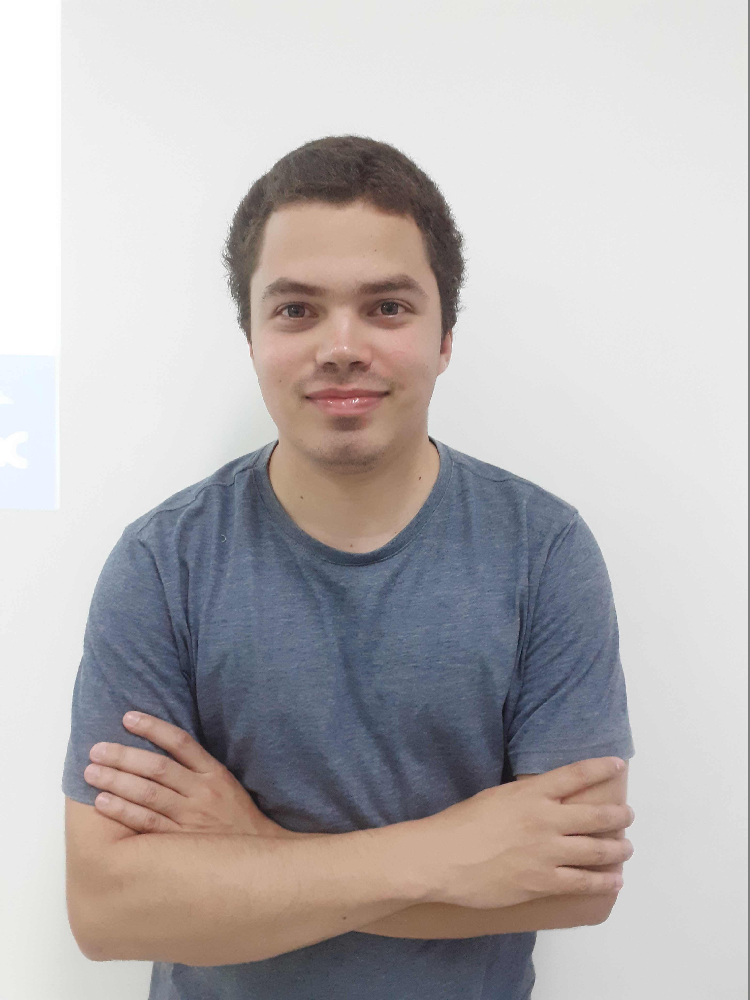

Bem-vindo ao Meu Currículo Online

Olá! Eu sou Pedro , um desenvolvedor web com experiência em diversas linguagens de programação como Python, C, Java, Javascript, Typescript, R, C++, Ruby, Go, C#, PHP, HTML e CSS e SQL, bem como entendimento basico em outras linguagens que venho a conhecer mais adiante.
Tambem tenho conceitos em segurança da informação, redes de computadores, engenharia de software, gestões dentro de TI, conceitos em banco de dados com pleno dominio em MySQL (banco relacional), além de conhecimentos em outras lingaugens relacionais, SGBD e bancos não relacionais com destaque para MongoDB
E possuo conhecimentos em pacote office com destaque para o Microsoft Excel, Power Point e Word, estou aprendendo conceitos de Power BI, Tableau, softwares ERP, computação em nuvem, visão computacional e afins, além de pleno dominio nas principais LLMS do mercado e novidades a saber.
Resumo Pessoal
Conhecer pessoas é o maior foco, pois sempre gosto de colecionar histórias a cada fato e ao falar sobre de mim eu sou muito além do que a história proprociona.
Sempre estarei disposto a fazer as atividades mesmo quando não estou em boas condições, faço e farei do inicio ao fim as tarefas.
Eu gosto de ajudar os outros colegas independenpe de qualuqer circunstancia da mesma maneira do que eu sendo ajudado pelos outros.
Siga as nossas redes
Para ter acesso ao curriculo impresso,clique aqui
Aqui na página do LinkTree voce encontra todos os meus contatos.
NOVIDADES!!!!
Teremos uma página denominada de Eventos onde irei exibir as minhas atividades dentro do ambiente acadêmico e profissional.